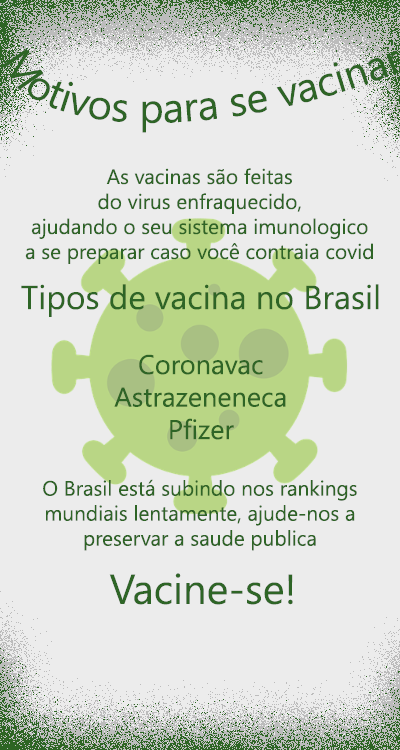

Ação e Projeto Fake News
Matérias
Estado “Democrático” Brasileiro E o demônio da Impunidade
aquiClique aqui para saber mais sobre a situação do Estado Democrático Brasileiro e como isso pode te impactar.
O que é o estado de direitos humanos?
aquiClique aqui para entender como os direitos humanos e sua percepção deles pode afetar sua perspectiva por completo.
A Importância da BNCC
aquiClique aqui e entenda a importância da base nacional curricular e como isso impacta nos métodos de ensino e na vida de vários jovens brasileiros.

Baixe aqui
Veja como gráficos mal intencionados podem mudar a sua cabeça.
Folder sobre vacinação.
Sobre nós
João Pedro Pohlmann Neo, Arthur Ramon, João Augusto Rosa Pinto Zart
Nosso professor orientador é o José Henrique de Oliveira com base no trabalho sobre o objetivo de Desenvolvimento Sutentável Dezesseis.